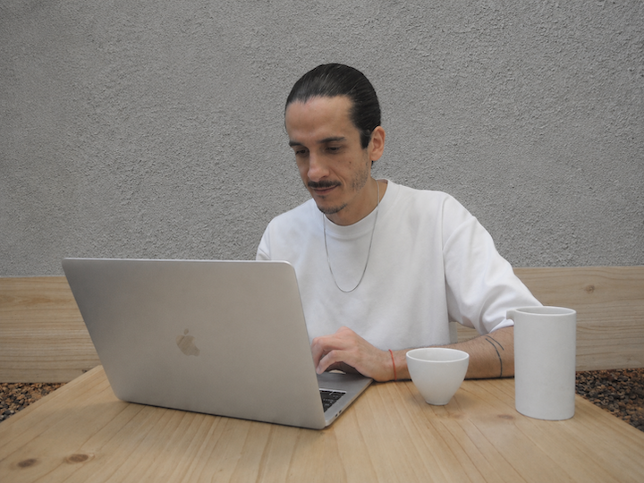

WHERE I'M STANDING

QUICK REVIEW
- Full Stack Web Development
- JavaScript & React
- Component-based Solutions
- User Interaction & Data-driven Interfaces
My name is Ander Vallejo Larre and I'm a Full Stack developer finishing my training at Barcelona Code School, where I've been building the technical foundation to enter the industry with a clear focus and real tools
JavaScript and React are my main stack and the environment where I feel most confident designing solutions. I'm drawn to problems that involve user interaction, data-driven interfaces, and modular systems: building things that are structured, scalable, and thoughtfully put together. I work well across the full stack but my strongest interest is in creating front-end experiences that are both functional and intentional.
BACKGROUND
Before web development, I spent years working as a music producer and later in digital arts and interactive systems, building installations that combined hardware and creative coding using tools like Arduino, Processing, and Pure Data.
Across both disciplines the throughline was the same: designing systems where components communicate, data flows, and users interact with technology intentionally. That thinking is what brought me to web development — and what I bring to it
If you want to know more about my previous work CLICK HERE!